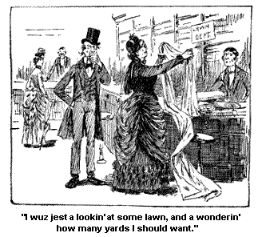
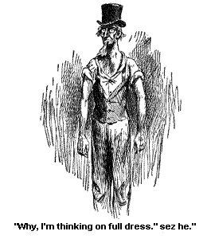
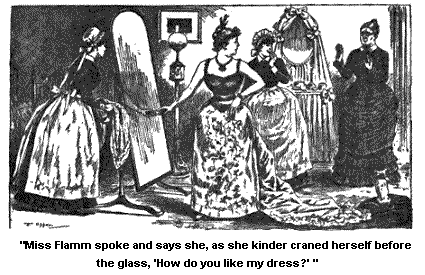

AT A LAWN PARTY.
Wall, the very next mornin' Miss Flamm sent word for Josiah and me to come that night to a lawn party. And I sez at once, "I must go and get some lawn."
Sez Josiah, "What will you do with it?"
And I sez, "Oh, I s'pose I shall wrap it round me, I'll do what the rest do."
And sez Josiah, "Hadn't I ort to have some too? If it is a lawn party and everybody else has it, I shall feel like a fool without any lawn."
And I looked at him in deep thought, and through him into the causes and consequences of things, and sez I, "I s'pose you do ort to have a lawn necktie, or handkerchief, or sunthin'."
Sez he, "How would a vest look made out of it, a kinder sprigged one, light gay colors on a yaller ground-work?"
But I sez at once, "You never will go out with me, Josiah, with a lawn vest on." And I settled it right there on the spot.
Then he proposed to have some wrapped round his hat, sort a festooned. But I stood like marble aginst that idee. But I knew I had got to have some lawn, and pretty soon we sallied out together and wended our way down to where I should be likely to find a lawn store.
And who should we meet a comin' out of a store but Ardelia. Her 3d cousin had sent her over to get a ingregient for cookin'. Good, willin' little creeter! She walked along with us for a spell. And while she wuz a walkin' along with us, we come onto a sight that always looked pitiful to me, the old female that wuz always a' sittin' there a singin' and playin' on a accordeun. And it seemed to me that she looked pitifuller and homblier than ever, as she sot there amongst the dense crowd that mornin' a singin' and a playin'. Her tone wuz thin, thin as gauze, hombly gause too. But I wondered to myself how she wuz a feelin' inside of her own mind, and what voices she heard a speakin' to her own soul, through them hombly strains. And, ontirely unbeknown to myself, I fell into a short revery (short but deep) right there in the street, as I looked down on her, a settin' there so old, and patient and helpless, amongst the gay movin' throng.
And I wondered what did she see, a settin' there with her blind eyes, what did she hear through them hombly tones that she wuz a singin' day after day to a crowd that wuz indifferent to her, or despised her? Did she hear the song of the mornin', the spring time of life? Did the song of a lark come back to her, a lark flyin' up through the sweet mornin' sky over the doorway of a home, a lark watched by young eyes, two pairs of 'em, that made the seein' a blessedness? Did a baby's first sweet blunders of speech, and happy laughter come back to her, as she sot there a drawin' out with her wrinkled hands them miserable sounds from the groanin' instrument? Did home, love, happiness sound out to her, out of them hombly strains? I'd have gin a cent to know.
And I'd have gin a cent quick to know if the tread -- tread -- tread of the crowd goin' past her day after day, hour after hour, seems to her like the trample of Time a marchin' on. Did she hear in 'em the footsteps of child, or lover, or friend, a steppin' away from her, and youth and happiness, and hope, a stiddy goin' away from her?
Did she ever listen through the constant sound of them steps, listen to hear the tread of them feet that she must know wuz a comin' nigh to her -- the icy feet that will approach us, if their way leads over rocks or roses?
Did she hate to hear them steps a comin' nearer to her, or did she strain her ears to hear 'em, to welcome 'em? I thought like as not she did. For thinkses I to myself, and couldn't help it, if she is a Christian she must be glad to change that old accordeun for a harp of any size or shape. For mournfuller and more melancholy sounds than her voice and that instrument made I never hearn, nor ever expect to hear, and thin.
Poor, old, hombly critter, I gin her quite a lot of change one day, and she braced up and sung and drawed out faster than ever, and thinner. Though I'd have gladly hearn her stop.
When I come up out of my revery, I see Ardelia lookin' at her stiddy and kind a sot. And I mistrusted trouble wuz ahead on me, and I hurried Josiah down the street. Ardelia a sayin' she had got to turn the corner, to go to another place for her 3d cousin.
Jest as we wuz a crossin' a street my companion drawed my attention to a sign that wuz jest overhead, and sez lie, "That means me, I'm spoke of right out, and hung up overhead."
And sez I, "What do you mean?"
Sez he, "Read it -- 'The First Man-I-Cure Of The Day.' That's me, Samantha; I haint a doubt of it. And I s'pose I ort to go in and be cured. I s'pose probably it will be expected of me, that I should go in, and let him look at my corns."
Sez I, "Josiah Allen, I've heerd you talk time and agin aginst big feelin' folks, and here you be a talkin' it right to yourself, and callin' yourself the first man of the day."
"Wall," sez he firmly, "I believe it, and I believe you do, and you'd own up to it, if you wuzn't so aggravatin'."
"Wall, sez I mildly, "I do think you are the first in some things, though what them things are, I would be fur from wantin' to tell you. But," I continued on, "I don't see you should think that means you. Saratoga is full of men, and most probable every man of 'em thinks it means him."
"Wall," sez he, "I don't think it means me, I know it. And I s'pose," he continued dreamily, "they'd cure me, and not charge a cent."
"Wall," sez I, "wait till another time, Josiah Allen." And jest at this minute, right down under our feet, we see the word "Pray," in big letters scraped right out in stun. And Josiah sez, "I wonder if the dumb fools think anybody is goin to kneel down right here in the street, and be run over. Why a man would be knocked over a dozen times, before he got through one prayer, Now I lay me down to sleep, or anything."
"Wall," sez I, mildly, "I don't think that would be a very suitable prayer under the circumstances. It haint expected that you'd lay down here for a nap -- howsumever," sez I reesunably "their puttin' the word there shows what good streaks the folks here have, and I don't want you to make light on't, and if you don't want to act like a perfect backslider you'll ceese usin' such profane language on sech a solemn subject."
Wall, we went into a good lookin'store and I wuz jest a lookin' at some lawn and a wonderin' how many yards I should want, when who should come in but Miss Flamm to get a rooch for her neck.

And she told me that I didn't need any lawn, and that it wuz a Garden party, and folks dressed in anything they wuz a mind to, though sez she, "A good many go in full dress."
"Wall," sez I calmly, "I have got one." And she told me to come in good season.
That afternoon, Josiah a bein' out for a walk, I took out of my trunk a dress that Alminy Hagidon had made for me out of a very full pattern I had got of a peddler, and wanted it all put in, so's it would fade all alike, for I mistrusted it wouldn't wash. It wuz gethered-in full round the waist, and the sleeves wuz set in full, and the waist wuz kinder full before, and it had a deep high ruffle gathered-in full round the neck. It wuz a very full dress, though I haint proud, and never wuz called so. Yet anybody duz take a modest pleasure in bein' equal to any occasion and comin' up nobly to a emergency. And I own that I did say to myself, as I pulled out the gethers in front, "Wall, there may be full dresses there to-night, but there will be none fuller than mine."
And I wuz glad that Alminy had made it jest as she had. She had made it a little fuller than even I had laid out to have it, for she mistrusted it would shrink in washin'. It wuz a very full dress. It wuz cambrick dark chocolate, with a set flower of a kind of a cinnamon brown and yellow, it wuz bran new and looked well.
Wall, I had got it on, and wuz contemplatin' its fullness with complacency and a hand-glass, a seein' how nobly it stood out behind, and how full it wuz, when Josiah Allen came in. I had talked it over with him, before he went out -- and he wuz as tickled as I wuz, and tickleder, to think I had got jest the right dress for the occasion. But he sez to me the first thing -- "You are all wrong, Samantha, full dress means low neck and short sleeves."
Sez I, "I know better!"
Sez he, "It duz."
Sez I, "Somebody has been a foolin' you, Josiah Allen! There ain't no sense in it. Do you s'pose folks would call a dress full, when there wuzn't more'n half a waist and sleeves to it. I'd try to use a little judgment, Josiah Allen! "
But he contended that he wuz in the right on't. And he took up his best vest that lay on the bed, and sot down, and took out his jack knife and went a rippin' open one of the shoulders, and sez I, "What are you doin', Josiah Allen?"
"Why, you can do as you are a mind to, Samantha Allen," sez he. "But I shall go fashionable, I shall go in full dress."
Sez I, "Josiah Allen do you look me in the face and say you are a goin' in a low neck vest, and everything, to that party to-night?"
"Yes, mom, I be. I am bound to be fashionable." And he went to rollin' up his shirt sleeves and turnin' in the neck of his shirt, in a manner that wuz perfectly immodest.
I turned my head away instinctively, for I felt that my cheek wuz a gettin' as red as blood, partly through delicacy and partly through righteous anger. Sez I, "Josiah Allen, be you a calculatin' to go there right out in public before men and wimmen, a showin' your bare bosom to a crowd? Where is your modesty, Josiah Allen? Where is your decency?"
Sez he firmly, "I keep 'em where all the rest do, who go in full dress."
I sot right down in a chair and sez I, "Wall there is one thing certain; if you go in that condition, you will go alone. Why," sez I, "to home, if Tirzah Ann, your own daughter, had ketched you in that perdickerment, a rubbin' on linement or anything, you would have jumped and covered yourself up, quicker'n a flash, and likeways me, before Thomas Jefferson. And now you lay out to go in that way before young girls, and old ones, and men and wimmen, and want me to foller on after your example. What in the world are you a thinkin' on, Josiah Allen?"

"Why I'm a thinkin, on full dress," sez be in a pert tone, a kinder turnin' himself before the glass, where he could get a good view of his bones. His thin neck wuzn't much more than bones, anyway, and so I told him. And I asked him if he could see any beauty in it, and sez I, "Who wants to look at our old bare necks, Josiah Allen? And if there wuzn't any other powerful reeson of modesty and decency in it, you'd ketch your death cold, Josiah Allen, and be laid up with the newmoan. You know you would," sez I, "you are actin' like a luny, Josiah Allen."
"It is you that are actin' like a luny," sez he bitterly. "I never propose anything of a high fashionable kind but what you want to break it up. Why, dumb it all, you know as well as I do, that men haint called as modest as wimmen anyway. And if they have the name, why shouldn't they have the game? Why shouldn't they go round half dressed as well as wimmen do? And they are as strong agin; if there is any danger to health in it they are better able to stand it. But," sez he, in the same bitter axents, "you always try to break up all my efforts at high life and fashion. I presume you won't waltz to-night, nor want me to."
I groaned several times in spite of myself, and sithed, "Waltz!" sez I in awful axents. "A classleader! and a grandfather! and talkin' about waltzin'!"
Sez Josiah, "Men older than me waltz, and foller it up. Put their arms right round the prettiest girls in the room, hug 'em, and swing 'em right round" -- sez he kinder spoony like.
I said nothin' at them fearful words, only my groans and sithes became deeper and more voyalent. And in a minute I see through the fingers with which I had nearly covered my face, that he wuz a pullin' down his shirt sleeves and a puttin' his jack knife in his pocket.
That man loves me. And love sways him round often times when reesun and sound argument are powerless. Now, the sound reesun of the case didn't move him, such as the indelicacy of makin' a exhibition of one's self in a way that would, if displayed in a heathen, be a call for missionarys to convert 'em, and that makes men blush when they see it in a Christian woman.
The sound reason of its bein' the fruitful cause of disease and death, through the senseless exposure.
The sound reason of the worse than folly of old and middle-aged folks thinkin' that the exhibition is a pretty one when it haint.
The sound reason of its bein' inconsistent for a woman to allow the familiarity of a man and a stranger, a walkin' up and puttin' his arm round her, and huggin' her up to him as clost as he can; that act, that a woman would resent as a deadly insult and her incensed relatives avenge with the sword, if it occurred in any other place than the ball-room and at the sound of the fiddle. The utter inconsistency of her meetin' it with smiles, and making frantic efforts to get more such affronts than any other woman present -- her male relatives a lookin' proudly on.
The inconsistency of a man's bein' not only held guiltless but applauded for doin' what, if it took place in the street, or church, would make him outlawed, for where is there a lot of manly men who would look on calmly, and see a sweet young girl insulted by a man's ketchin' hold of her and embracin' of her tightly for half an hour, -- why, he would be turned out of his club and outlawed from Christian homes if it took place in silence, but yet the sound of a fiddle makes it all right.
And I sez to myself mildly, as I sot there, "Is it that men and wimmen lose their senses, or is there a sacredness in the strains of that fiddle, that makes immodesty modest, indecency decent, and immorality moral?" And agin I sithe heavy and gin 3 deep groans. And I see Josiah gin in. All the sound reasons weighed as nothin' with him, but 2 or 3 groans, and a few sithes settled the matter. Truly Love is a mighty conqueror.
And anon Josiah spoke and sez, "Wall, I s'pose I can gin it all up, if you feel so about it, but we shall act like fools, Samantha, and look like 'em."
Sez I sternly, "Better be fools than naves, Josiah Allen! if we have got to be one or the other, but we haint. We are a standin' on firm ground, Josiah Allen," sez I. "The platform made of the boards of consistency, and common sense, and decency, is one that will never break down and let you through it, into gulfs and abysses. And on that platform we will both stand to-night, dear Josiah."
I think it is always best when a pardner has gin in and you have had a triumph of principle, to be bland; blander than common to him. I always love at such times to round my words to him with a sweet affectionateness of mean. I love to, and he loves it.
We sot out in good season for the Garden party. And it wuz indeed a sight to behold! But I did not at that first minute have a chance to sense it, for Miss Flamm sent her hired girl out to ask me to come to her room for a few minutes. Miss Flamm's house is a undergoin' repairs for a few weeks, sunthin' had gin out in the water works, so she and her hired girl have been to this tarven for the time bein'. The hired girl got us some good seats and tellin' Josiah to keep one on 'em for me, I follered the girl, or "maid," as Miss Flamm calls her. But good land! if she is a old maid, I don't see where the young ones be.
Miss Flamm had sent for me, so she said, to see if I wanted to ride out the next day, and what time would be the most convenient to me, and also, to see how I liked her dress. She didn't know as she should see me down below, in the crowd, and she wanted me to see it. (Miss Flamm uses me dretful well, but I s'pose 2/3ds of it, is on Thomas J's account. Some folks think she is goin' to have another lawsuit, and I am glad enough to have him convey her lawsuits, for they are good, honerable ones, and she pays him splendid for carryin' 'em.)
Wall, she had her skirts all on when I went in, all a foamin' and a shinin', down onto the carpet, in a glitterin' pile of pink satin and white lace and posys. Gorgus enough for a princess.
And I didn't mind it much, bein' only females present, if she wuz exposin' of herself a good deal. I kinder blushed a little as I looked at her, and kep' my eyes down on her skirts all I could, and thinkses I to myself, -- "What if G. Washington should come in? I shouldn't know which way to look." But then the very next minute, I says to myself, "Of course he won't be in till she gets her waist on. I'm a borrowin' trouble for nothin'."
At last Miss Flamm spoke and says she, as she kinder craned herself before the glass, a lookin' at her back (most the hull length on it bare, as I am a livin' creeter); and says she, "How do you like my dress?"

"Oh," says I, wantin' to make myself agreeable (both on account of principle, and the lawsuit), "the skirts are beautiful but I can't judge how the hull dress looks, you know, till you get your waist on."
"My waist?" says she.
"Yes," says I.
"I have got it on," says she.
"Where is it?" says I, a lookin' at her closer through my specks, "Where is the waist?"
"Here," says she, a pintin' to a pink belt ribbon, and a string of beads over each shoulder.
Says I, "Miss Flamm, do you call that a waist?"
"Yes," says she, and she balanced herself on her little pink tottlin' slippers. She couldn't walk in 'em a good honerable walk to save her life. How could she, with the instep not over two inches acrost, and the heels right under the middle of her foot, more'n a finger high? Good land, they wuz enuff to lame a Injun savage, and curb him in. But she sort o' balanced herself unto 'em, the best she could, and put her hands round her waist -- it wuzn't much bigger than a pipe-stem, and sort o' bulgin' out both ways, above and below, some like a string tied tight round a piller, - and says she complacently, "I don't believe there will be a dress shown to-night more stylish and beautiful than mine."
Says I, "Do you tell me, Miss Flamm, that you are a goin' down into that crowd of promiscus men and women, with nothin' but them strings on to cover you?" Says I, "Do you tell me that, and you a perfesser and a Christian?"
"Yes," says she, "I paid 300 dollars for this dress, and it haint likely I am goin' to miss the chance of showin' it off to the other wimmen who will envy me the possession of it. To be sure," says she, "it is a little lower than Americans usually wear. But in fashion, as in anything else, somebody has got to go ahead. This is the very heighth of fashion," says she.
Says I in witherin' and burnin' skorn, "It is the heighth of immodesty."
And I jest turned my back right ont' her, and sailed out of the room. I wuzn't a a goin' to stand that, lawsuit or no lawsuit. I wuz all worked up in my mind, and by the side of myself, and I didn't get over it for some time, neither.
Wall, I found my companion seated in that comfertable place, and a keepin' my chair for me, and so I sot down by him, and truly we sot still, and see the glory, and the magnificence on every side on us. There wuz 3 piazzas about as long as from our house to Jonesville, or from Jonesville to Loontown, all filled with folks magnificently dressed, and a big garden layin' between 'em about as big as from our house to Miss Gowdey's, and so round crossways to Alminy Hagidone's brother's, and back agin'. It wuz full as fur as that, and you know well that that is a great distance.
There wuz some big noble trees, all twinklin' full of lights, of every coler, and rows of shinin' lights, criss-crossed every way, or that is, every beautiful way, from the high ornimental pillers of the immense house, that loomed up in the distance round us on every side, same as the mountains loom up round Loontown.
There wuz a big platform built in the middle of the garden, with sweet music discoursin' from it the most enchantin' strains. And the fountains wuz sprayin' out the most beautiful colers you ever see in your life, and fallin' down in pink, and yellow, and gold, and green, and amber, and silver water; sparklin' down onto the green beautiful ferns and flowers that loved to grow round the big marble basin which shone white, risin' out of the green velvet of the grass.
Josiah looked at that water, and sez he, "Samantha, I'd love to get some of that water to pass round evenin's when we have company." Sez he, "It would look so dressy and fashionable to pass round pink water, or light blue, or light yeller. How it would make Uncle Nate Gowdey open his eyes. I believe I shall buy some bottles of it, Samantha, to take home. What do you say? I don't suppose it would cost such a dretful sight, do you?"
Sez he, "I s'pose all they have to do is to put pumps down into a pink spring, or a yeller one, as the case may be, and pump. And I would be willin' to pump it up myself, if it would come cheaper."
But my companion soon forgot to follow up the theme in lookin' about him onto the magnificent, seen, and a seein' the throngs of men and wimmen growin' more and more denser, and every crowd on 'em that swept by us, and round us, and before us, a growin' more gorgus in dress, or so it seemed to us. Gemms of every gorgus coler under the heavens and some jest the coler of the heavens when it is blue and shinin' or when it is purplish dark in the night time, or when it is full of white fleecy clouds, or when it is a shinin' with stars.
Why, one woman had so many diamonds on that she had a detective follerin' her all round wherever she went. She wuz a blaze of splendor and so wuz lots of 'em, though like the stars, they differed from each other in glory.
But whatever coler their gowns wuz, in one thing they wuz most all alike -- most all of 'em had waists all drawed in tight, but a bulgin' out on each side, more or less as the case might be. Why some of them waists wuzn't much bigger than pipe's tails and so I told Josiah.
And he whispered back to me, and sez he, "I wonder if them wimmen with wasp waists, think that we men like the looks on 'em. They make a dumb mistake if they do. Why," sez he, "we men know what they be; we know they are nothin' but crushed bones and flesh." Sez he, "I could make my own waist look jest like 'em, if I should take a rope and strap myself down."
"Wall," sez I, in agitated axents, "don't you try to go into no such enterprise, Josiah Allen."
I remembered the eppisode of the afternoon, and I sez in anxins axents, and affectionate, "Besides not lookin' well, it is dangerous, awful dangerous. And how I should blush," sez I, "if I wuz to see you with a leather strap or a rope round your waist under your coat, a drawin' you in ; a changin' your good honerable shape. And God made men's and wimmen's waists jest alike in the first place, and it is jest as smart for men to deform themselves in that way as it is for wimmen. But oh, the agony of my soul if I should see you a tryin' to disfigure yourself in that way."
"You needn't be afraid, Samantha," sez he, "I am dressy, and always wuz, but I haint such a fool as that, as to kill myself in perfect agony, for fashion."
I didn't say nothin' but instinctively I looked down at his feet, "Oh, you needn't look at my feet, Samantha, feet are very different from the heart, and lungs, and such. You can squeeze your feet down, and not hurt much moren the flesh and bones. But you are a destroyin' the very seat of life when you draw your waist in as them wimmen do."
"I know it," sez I, "but I wouldn't torture myself in any way if I wuz in your place."
"I don't lay out to," sez he. "I haint a goin' to wear corsets, it haint at all probable I shall, though I am better able to stand it, than wimmen be."
"I know that," sez I. "I know men are stronger and better able to bear the strain of bein' drawed in and tapered." I am reesonable, and will ever speak truthful and honest, and this I couldn't deny and didn't try to.
"Wall, dumb it, what makes men stronger?" sez he.
"Why," sez I, "I s'pose one great thing is their dressin' comfortable."
"Wall, I am glad you know enough to know it," sez he. "Why," sez he, "jest imagine a man tyin' a rope round his waist, round and round; or worse yet, take strong steel, and whalebones, and bind and choke himself down with 'em, and tottlin' himself up on high heel slippers, the high heels comin' right up in the ball of his foot -- and then havin' heavy skirts a holdin' him down, tied back tight round his knees and draggin' along on the ground at his feet -- imagine me in that perdickerment, Samantha."
I shuddered, and sez I, "Don't bring up no such seen to harrow up my nerve." Sez I, "You know I couldn't stand it, to see you a facin' life and its solemn responsibilities in that condition. It would kill me to witness your sufferin'," sez I. And agin' I shuddered, and agin I sithed.
And he sez, "Wall, it is jest as reasonable for a man to do it as for a woman; it is far worse and more dangerous for a woman than a man."
"I know it," sez I, between my sithes. "I know it, but I can't, I can't stand it, to have you go into it."
"Wall, you needn't worry, Samantha, I haint a fool. You won't ketch men a goin' into any such performances as this, they know too much." And then he resumed on in a lighter agent, to get my mind still further off from his danger, for I wuz still a sithin', frequent and deep.
Sez he, as he looked down and see some wimmen a passin' below; sez hey "I never see such a sight in my life, a man can see more here in one evenin' than he can in a life time at Jonesville."
"That is so, Josiah," sez I, "you can." And I felt every word I said, for at that very minute a lady, or rather a female woman, passed with a dress on so low in the neck that I instinctively turned away my head, and when I looked round agin, a deep blush wuz mantlin' the cheeks of Josiah Allen, a flushin' up his face, clear up into his bald head.
I don't believe I had ever been prouder of Josiah Allen, than I wuz at that minute. That blush spoke plainer than words could, of the purity and soundness of my pardner's morals. If the whole nation had stood up in front of me at that time, and told me his morals wuz a tottlin' I would have scorned the suggestion. No, that blush telegraphed to me right from his soul, the sweet tidin's of his modesty and worth.
And I couldn't refrain from sayin' in encouragin', happy axents, "Haint you glad now, Josiah Allen, that you listened to your pardner; haint you glad that you haint a goin' round in a low necked coat and vest, a callin' up the blush of skern and outraged modesty to the cheeks 'of noble and modest men?"
"Yes," sez he, graspin' holt of my hand in the warmth of his gratitude,
for he see what I had kep' him from. "Yes, you wuz in the right on't,
Samantha. I see the awfulness of the peril from which you rescued
of me. But never," sez he, a lookin' down
agin over the railin', onto some more wimmen a passin' beneath, "never
did I see what I have seen here to-night. Not," sez he dreemily,
"sense I wuz a baby."
"Wall," sez I, "don't try to look, Josiah; turn your eyes away."
And I believe he did try to -- though such is the fascination of a known danger in front of you, that it is hard to keep yourself from contemplatin' of it. But he tried to. And he tried to not look at the waltzin' no more than he could help, and I did too. But in spite of himself he had to see how clost the young girls wuz held; how warmly the young men embraced 'em. And as he looked on, agin I see the hot blush of shame mantillied Josiah's cheeks, and again he sez to me in almost warm axents, "I realize what you have rescued me from, Samantha."
And I sez, "You couldn't have looked Elder Minkley in the face, could you? if you had gone into that shameful diversion."
"No, I couldn't, nor into yourn nuther. I couldn't have looked nobody in the face, if I had gone on and imposed on any young girl as they are a doin', and insulted of her. Why," sez he, "if it wuz my Tirzah Ann that them, men wuz a embracin', and huggin', and switchin' her round, as if they didn't have no respect for her at all, -- why, if it wuz Tirzah Ann, I would tear 'em 'em from lim."
And he looked capable on't. He looked almost sublime (though small). And I hurried him away from the seen, for I didn't know what would ensue and foller on, if I let him linger there longer. He looked as firm and warlike as one of our bantam fowls, a male one, when hawks are a hoverin' over the females of the flock. And when I say Bantam I say it with no disrespect to Josiah Allen. Bantams are noble, and warlike fowls, though small boneded.
I got one more glimps of Miss Flamm jest as we left the tarven. She wuz a standin' up in the parlor, with a tall man a standin' up in front of her a talkin'. He seemed to be biddin' of her good-bye, for he had holt of her hand, and be wuz a sayin' as we went by 'em, sez he, "I am sorry not to see more of you."
"Good land!" thinkses I, "what can the man be a thinkin' on? the mean, miserable creeter! If there wuz ever a deadly insult gin to a woman, then wuz the time it wuz gin. Good land! good land!"
I don't know whether Miss Flamm resented it, or not, for I hurried Josiah
along. I didn't want to expose him to no sich sights, good, innocent
old creeter. So I kep' him up on a pretty good jog till I got him
home.